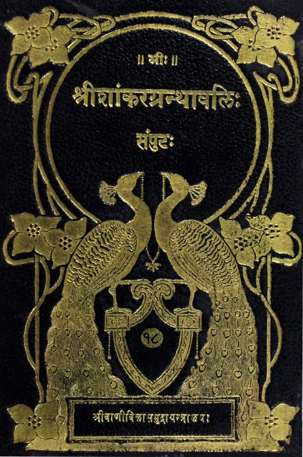

श्रीशांकरग्रन्थावलिः
संपुटः १ - २०
Home
About
Concluding Note
T. K. Balasubramaniam
Superhuman efforts of a savant
Prema Nandakumar
Views on the Sri Vani Vilas Press
His (Sri TKB’s) aim
Volumes
हनुमत्पञ्चरत्नम्
श्रीरामभुजंगप्रयातस्तोत्रम्
लक्ष्मीनृसिंहपञ्चरत्नम्
लक्ष्मीनृसिंहकरुणारसस्तोत्रम्
श्रीविष्णुभुजंगप्रयातस्तोत्रम्
विष्णुपादादिकेशान्तस्तोत्रम्
पाण्डुरङ्गाष्टकम्
अच्युताष्टकम्
कृष्णाष्टकम्
हरिस्तुतिः
गोविन्दाष्टकम्
भगवन्मानसपूजा
मोहमुद्गरः
कनकधारास्तोत्रम्
अन्नपूर्णाष्टकम्
मीनाक्षीपञ्चरत्नम्
मीनाक्षीस्तोत्रम्
दक्षिणामूर्तिस्तोत्रम्
कालभैरवाष्टकम्
नर्मदाष्टकम्
यमुनाष्टकम्
यमुनाष्टकम्
गङ्गाष्टकम्
मणिकर्णिकाष्टकम्
निर्गुणमानसपूजा
प्रातःस्मरणस्तोत्रम्
जगन्नाथाष्टकम्
षट्पदीस्तोत्रम्
भ्रमराम्बाष्टकम्
शिवपञ्चाक्षरनक्षत्रमालास्तोत्रम्
द्वादशलिङ्गस्तोत्रम्
अर्धनारीश्वरस्तोत्रम्
शारदाभुजंगप्रयाताष्टकम्
गुर्वष्टकम्
काशीपञ्चकम्
ललितात्रिशतीभाष्यम्

स्तोत्राणि
(Stotras)